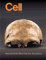
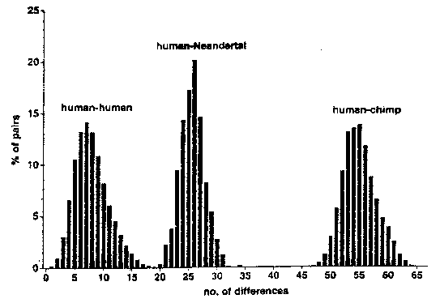
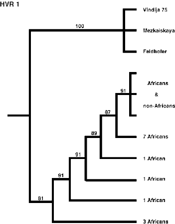
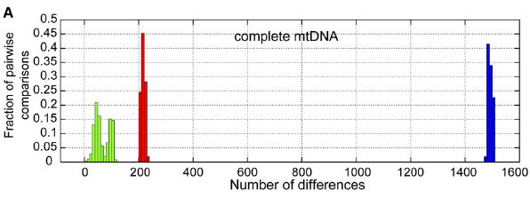

Fossile Hominiden: mitochondriale DNA

Im Juli 1997 wurde die erste erfolgreiche Extraktion von Neandertal-DNA angekündigt. In einem Artikel in der Zeitschrift Cell behauptete ein Team deutscher und amerikanischer Forscher, das von Svante Pääbo angeführt wurde (Krings et al. 1997), mitochondriale DNA (mtDNA) aus einem Knochenstück, das vom Oberarm des ersten anerkannten Neandertal-Fossils geschnitten wurde, extrahiert zu haben. Dieses Individuum wurde 1856 in der Feldhofer-Höhle im Neandertal in Deutschland gefunden (Kahn und Gibbons 1997, Ward und Stringer 1997). Was ist die Bedeutung dieser Studie?
Was ist mitochondriale DNA?
Die DNA (Desoxyribonukleinsäure) ist das gigantische Molekül, das verwendet wird, um genetische Informationen für alle Lebewesen auf der Erde zu kodieren. DNA-Moleküle bestehen aus einem langen Strang von Basismolekülen, die in Form eines Doppelhelix angeordnet sind. Die Basen sind Adenin, Guanin, Cytosin und Thymin, die oft als A, G, C und T abgekürzt werden. Das, was wir gewöhnlich als „unsere" DNA betrachten, weil es die meisten Aspekte unserer äußeren Erscheinung steuert, wird auch als „kernständige DNA" bezeichnet, da jede Zelle in unserem Körper zwei Kopien davon im Zellkern enthält.
Mitochondrien (Singular: Mitochondrium) sind kleine, energieerzeugende Organellen, die in Zellen vorkommen. Überraschenderweise besitzen Mitochondrien ihre eigenen DNA-Moleküle, die völlig unabhängig von unserer Kern-DNA sind. Die meisten Zellen enthalten zwischen 500 und 1000 Kopien des mtDNA-Moleküls, was es deutlich einfacher macht, es zu finden und zu extrahieren als die Kern-DNA. Beim Menschen besteht das mtDNA-Genom aus etwa 16.000 Basenpaaren (deutlich kürzer als unsere Kern-DNA) und wurde vollständig sequenziert (zumindest für eine einzelne Person; Anderson et al. 1981). Besonders interessant am mtDNA ist, dass es, im Gegensatz zur Kern-DNA, die gleichmäßig von Vater und Mutter vererbt wird, ausschließlich von der Mutter vererbt wird, da alle unsere Mitochondrien von denen in der Eizelle unserer Mutter abstammen (es gibt jedoch möglicherweise seltene Ausnahmen von dieser Regel; siehe unten).
Betrachten Sie die Menge aller heute lebenden Frauen, dann die Menge aller ihrer Mütter und so weiter. Offensichtlich wird jede Menge gleich klein oder kleiner als die vorherige sein. Schließlich wird die Menge nur noch eine Frau enthalten, die als „mitochondriale Eva" bekannt ist. Die mtDNA aller heute lebenden Menschen stammt von mitochondrialer Eva.
Normalerweise ist unsere mtDNA identisch mit der unserer Mutter. Doch wie alle DNA mutiert mtDNA gelegentlich, sodass sich eine der Basen (A, C, G oder T) in eine andere Base verwandelt. Aufgrund dieser Mutationen hat sich die menschliche mtDNA langsam von der mtDNA der mitochondrialen Eva entfernt, und die Menge der Mutationen ist ungefähr proportional zur verstrichenen Zeit. Das bedeutet, dass die Ähnlichkeit der mtDNA bei zwei beliebigen Menschen eine grobe Schätzung darüber liefert, wie eng sie durch ihre mütterlichen Vorfahren verwandt sind. Wenn sie identische mtDNA haben, sind sie ziemlich eng verwandt, vielleicht sogar Geschwister. Wenn sie sehr unterschiedliche mtDNA haben, bedeutet das, dass ihr letzter gemeinsamer mütterlicher Vorfahr vor langer Zeit lebte.
Jedoch ist es schwierig, unter Verwendung der genetischen Unterschiede die Zeit des letzten gemeinsamen Vorfahren abzuschätzen, und zwar aus mehreren Gründen. Einerseits ist die Rate, mit der mtDNA mutiert, schlecht gemessen. Andererseits werden selbst wenn die durchschnittliche Mutationsrate genau bekannt ist, einige Abstammungslinien zufällig weniger oder mehr Mutationen als im Durchschnitt anhäufen.
Extraktion der mitochondrialen DNA
Nach dem Tod beginnt die DNA sofort zu zerfallen. Man geht davon aus, dass unter den günstigsten Bedingungen einige DNA-Fragmente bis zu 50.000 bis 100.000 Jahre überdauern können. Das Feldhofer-Neandertaler-Fossil, das auf ein Alter zwischen 30.000 und 100.000 Jahren geschätzt wird, kam daher an die Grenzen für diese Art von Arbeit. Die ersten Tests des Fossils zeigten jedoch eine gute Erhaltung von Aminosäuren, was darauf hindeutete, dass es möglicherweise wiederherstellbare mtDNA enthalten könnte.
Die Polymerase-Kettenreaktion (PCR) ist eine Technik, die verwendet werden kann, um viele Kopien einer anfänglich kleinen Anzahl von Molekülen zu erzeugen. Die Forscher nutzten die PCR, um viele kurze Stränge von mtDNA aus der Neandertaler-Probe zu amplifizieren und zu extrahieren. Durch das Überlappen dieser Stränge konnten sie eine Sequenz von 379 Basen, die offensichtlich vom Neandertaler stammte, generieren. Um Fehler und Kontamination vorzubeugen, wurde jede Base in mindestens zwei separaten Amplifikationen extrahiert. Die Sequenz wurde aus einem Abschnitt des mtDNA-Genoms extrahiert, der als hypervariable Region 1 (HVR1) bekannt ist, so genannt, weil dieser Abschnitt des Genoms Mutationen schneller ansammelt als der Großteil des Genoms und daher besonders nützlich ist, um zwischen verschiedenen Populationen zu unterscheiden.
Krings et al. verglichen diese Sequenz anschließend mit einer Datenbank von 994 verschiedenen mtDNA-Sequenzen aus modernen Menschen. Für die fragliche mtDNA-Sequenz unterscheiden sich Menschen im Durchschnitt in 8 +/- 3,1 Positionen (die „3,1" repräsentiert eine Standardabweichung). Der größte Unterschied zwischen zwei beliebigen modernen Menschen betrug 24, und der kleinste Unterschied war 1 (da Duplikate aus der Datenbank entfernt wurden).
|
 Verteilung der paarweisen Sequenzunterschiede zwischen Menschen, dem Neandertaler und Schimpansen. X-Achse, Anzahl der Sequenzunterschiede; Y-Achse, Prozentsatz der paarweisen Vergleiche. (Krings et al., 1997) |
Im Gegensatz dazu wies das Neandertal-Genom durchschnittlich 27 +/- 2,2 Unterschiede zum modernen Menschen auf (3,375-mal so viele wie der durchschnittliche Unterschied zwischen modernen Menschen). Der kleinste Unterschied zwischen einem beliebigen modernen Menschen und dem Neandertal betrug 22, und der größte Unterschied zwischen einem beliebigen modernen Menschen und dem Neandertal betrug 36. Diese Unterschiede stellen das Neandertal-Genom deutlich außerhalb der Grenzen des modernen Menschen. Ein weiteres interessantes Ergebnis ist, dass die mtDNA-Sequenz gleich weit von allen modernen menschlichen Gruppen entfernt schien. Insbesondere schien sie nicht enger mit Europäern verwandt zu sein, was man erwartet hätte, wenn, wie einige Wissenschaftler glauben, Neandertaler zumindest teilweise deren Vorfahren waren.
Im Jahr 1999 gelang es denselben Forschern, eine zweite Sequenz von 340 Basenpaaren von mtDNA aus demselben Neandertaler-Fossil erfolgreich zu extrahieren (Krings et al. 1999). Diese Studie bestätigte die Ergebnisse der ersten. Wenn die Unterschiede zwischen den 600 vergleichbaren Basenpaaren von 663 modernen Menschen, dem Neandertaler und 9 Schimpansen berechnet wurden, unterschieden sich die modernen Menschen untereinander um 10,9 +/- 5,1 (Bereich 1-35), der Neandertaler unterschied sich von den Menschen um 35,3 +/- 2,3 (Bereich 29-43), und sowohl Menschen als auch beide Neandertaler unterschieden sich von Schimpansen jeweils um etwa 94.
mtDNA aus einem zweiten Neandertaler
Im Jahr 1999 gelang es Wissenschaftlern, eine Sequenz von 345 Basenpaaren aus mtDNA aus einem zweiten Neandertaler, einem 29.000 Jahre alten Fossil eines Babys, das kürzlich in der Mesmaiskaya-Höhle im Südwesten Russlands entdeckt wurde, zu extrahieren. (Ovchinnikov et al. 2000, Höss 2000) Die Ergebnisse dieser Studie waren den vorherigen ähnlich und stellten das Mezmaiskaya-Material außerhalb des Bereichs der mtDNA des modernen Menschen.
Zusätzlich sind die beiden Neandertaler relativ ähnlich und unterscheiden sich in 12 Basenpaaren. Der Unterschied ist größer als der, der normalerweise zwischen Paaren moderner Europäer oder Asiaten gefunden wird (nur 1 % davon unterscheiden sich an 12 oder mehr Stellen), aber vergleichbar mit den Unterschieden zwischen modernen Afrikanern (37 % davon unterscheiden sich an 12 oder mehr Stellen).
Der Abstand zwischen Mezmaiskaya und einer bestimmten modernen menschlichen Sequenz, die als Referenzsequenz bekannt ist (Anderson et al. 1981), betrug 22, im Vergleich zu 27 für den ersten Neandertaler. (Allerdings werden keine Zahlenwerte für die minimalen, durchschnittlichen und maximalen Abstände zwischen Mezmaiskaya und modernen Menschen angegeben; es ist unklar, ob Mezmaiskaya im Allgemeinen moderneren Menschen näher steht als Feldhofer.)
Die phylogenetischen Analysen von Ovchinnikov et al. zeigen, dass die beiden Neandertaler zusammengefasst werden und sich von allen modernen Menschen trennen. Wie beim ersten Exemplar scheint Mezmaiskaya ebenfalls gleich weit von allen Gruppen moderner Menschen entfernt zu sein, was den Schluss stärkt, dass Neandertaler nicht eng mit modernen Europäern verwandt sind.
Da dieser zweite Individuum etwa 2.500 km (1.500 Meilen) vom ersten entdeckt wurde, liefert er eine sehr starke Bestätigung der vorherigen Ergebnisse.
Die Tatsache, dass seine mtDNA auch relativ nahe an der der ersten Neandertaler lag, macht es viel unwahrscheinlicher, dass Neandertaler und die Vorfahren des modernen Menschen beide Teil einer sich kreuzenden Population waren, die über eine große Menge an mtDNA-genetischer Variation verfügte, die größtenteils verloren gegangen ist:
"Insbesondere reduzieren diese Daten die Wahrscheinlichkeit, dass Neandertaler eine ausreichende mtDNA-Sequenzvielfalt aufwiesen, um die Vielfalt moderner Menschen zu umfassen" (Ovchinnikov et al. 2000)
Interessanterweise scheint die Erhaltung des Mezmaiskaya-Exemplars viel besser zu sein als die des Feldhofer-Exemplars. Sie ist so gut, dass es möglich sein könnte, sein gesamte mitochondriale DNA-Genom zu sequenzieren, und sogar besteht die Möglichkeit, dass ein Teil seiner nukleären DNA zurückgewonnen werden kann.
mtDNA aus einem dritten Neandertaler
Im Jahr 2000 gaben Wissenschaften die Sequenzierung eines dritten Neandertaler-mtDNA-Spezimens aus einer Höhle in Vindija, Kroatien, bekannt (Krings et al. 2000). Wenn die drei Neandertaler mit modernen Menschen verglichen werden, gruppieren sich alle drei zusammen und stehen abseits aller modernen Menschen. Dieser Schluss wird durch eine Studie von Knight (2003) gestärkt. Knight schloss aus dem Vergleich Stellen im mtDNA-Genom aus, die bekanntermaßen mehr als einmal mutiert sind und daher schlechte Indikatoren für phylogenetische Beziehungen darstellen. Seine Studie bestätigte frühere Studien stark, die tief divergente Geschichten für moderne menschliche mtDNA-Linien und die bekannten Neandertaler-Linien zeigten.
|
 |
Wie moderne Menschen besaßen die Neandertaler eine geringe genetische Vielfalt im Vergleich zu Affen. Die Vielfalt der drei Neandertal-mtDNA-Sequenzen (3,73%) ist niedriger als die der Schimpansen (14,82+/-5,7%) und Gorillas (18,57+/-5,26%) und ähnelt der von modernen Menschen weltweit (3,43+/-1,22%). Wenn moderne Menschen in kontinentale Gruppen unterteilt werden, ist die Vielfalt der drei Neandertaler ähnlich (innerhalb einer Standardabweichung) wie bei Afrikanern, Asiaten, Native Americans und australischen Ureinwohnern sowie Ozeaniern. Moderne Europäer, die in ungefähr derselben Region leben wie die Neandertaler, weisen eine geringere Vielfalt auf als die Neandertaler.
Noch mehr Neandertaler-mtDNA
Schmitz et al. (2002) reported on a fourth Neandertal mtDNA sequence from the second Neandertal fossil found at Feldhofer, the site in Germany at which the first Neandertal fossil was found. It was closely related to the previous Neandertal mtDNA sequences.Serre et al. (2004) konnten mtDNA von vier weiteren Neandertaler-Fossilien sowie mtDNA von fünf frühen modernen Menschen sequenzieren. Alle vier Neandertaler besaßen mtDNA, die derjenigen der zuvor untersuchten Neandertaler ähnelte. Serre und seine Kollegen fanden keine Hinweise auf einen mtDNA-Gentransfer zwischen modernen Menschen und Neandertalern in beide Richtungen, konnten jedoch die Möglichkeit eines begrenzten Gentransfers nicht ausschließen. Interessanterweise waren die mtDNA-Sequenzen der Vindija-Neandertaler, die eine weniger extreme Neandertaler-Anatomie aufweisen als die klassischen Neandertaler und von einigen Wissenschaftlern als Übergangsform zwischen modernen Menschen und klassischen Neandertalern betrachtet werden, nicht näher an modernen Menschen als die übrigen Neandertaler-Fossilien.
Bis 2008 wurden 17 mtDNA-Sequenzen aus Neandertaler-Fossilien extrahiert (Green et al. 2008). Alle diese Sequenzen stützen den Schluss, dass Neandertaler-mtDNA außerhalb des Bereichs der modernen menschlichen mtDNA liegt, und deuten stark darauf hin, dass Neandertaler keinen dauerhaften Beitrag zum menschlichen mtDNA-Genpool leisteten. (Dies beweist jedoch nicht, dass sie keinen Beitrag zum nukleären DNA von modernen Menschen leisteten.)
Das erste vollständige Neandertal-mtDNA-Genom
In 2008, the first complete sequencing of Neandertal mtDNA was announced (Green et al. 2008). A complete mtDNA genome of 16,565 base pairs was extracted from a 38,000 year old fossil from the Vindija cave in Croatia. As Krings et al. 2007 had done, the authors created a graph showing the numbers of base pair differences for humans, chimps and the Neandertal when compared against humans. Because they were able to compare across the whole genome rather than a small portion of it, the differences between humans and the Neandertal was far more striking:|
 Green: Vergleiche Mensch/Mensch; Rot: Vergleiche Mensch/N'tal; Blau: Vergleiche Mensch/Schimpanse. X-Achse: Anzahl der Sequenzunterschiede; Y-Achse: Anteil der paarweisen Vergleiche. (Green et al. 2008) |
Bei den Menschen lagen die Sequenzen zwischen 2 und 118 Unterschieden. Die Anzahl der Unterschiede zwischen den menschlichen mtDNAs und der Neandertaler-mtDNA variiert von 201 bis 234. Der winzige Überlappungsbereich zwischen den menschlichen und den Neandertaler-Werten im ursprünglichen Diagramm ist verschwunden; stattdessen besteht nun ein beträchtlicher Abstand zwischen den menschlichen und den Neandertaler-Ergebnissen. Green et al. schlossen daraus:
Die Analyse der zusammengeführten Sequenz stellt unzweifelhaft fest, dass die Neandertal-mtDNA außerhalb der Variation der bei Menschen heute lebenden mtDNAs liegt und eine Schätzung des Divergenzdatums zwischen den beiden mtDNA-Linien von 660.000 ± 140.000 Jahren ermöglicht.
Das erste Neandertaler-Kerngenom
In May 2010, a first draft of a Neandertal nuclear genome was published for the first time (Green et al. 2010). About 4 billion base pairs, or roughly 2/3rds of of the entire genome, was sequenced from three individuals. Even more interestingly, analysis of the genome seems to show that Neandertals interbred with humans, and that all non-African modern humans contain between 1% and 4% of Neandertal genes. (A later paper, Reich et al. 2010, has narrowed that range to between 1.9% and 3.1% of Neandertal genes.) Because Asians as well as Europeans have these Neanderthal genes, the researchers believe the most likely explanation is that the interbreeding occurred in the Middle East when modern humans first left Africa between 60,000 and 80,000 years ago, and before they expanded into the rest of the world.Ist die Neandertaler-mtDNA außerhalb des menschlichen Bereichs?
Ja.
Beachten Sie (in Bezug auf Krings et al. 2007), dass zwei moderne menschliche Sequenzen 24 Basen voneinander entfernt sind, während die kleinste Neandertaler/menschliche Differenz nur 22 beträgt. Dies bedeutet nicht, dass die Neandertaler-Sequenz im Bereich moderner Menschen liegt. Um eine Analogie zu verwenden: Nehmen wir an, wir messen die Größe von 994 erwachsenen Menschen, und diese variieren von 4'8" bis 6'8" (eine Differenz von 24 Zoll). Nehmen wir an, wir finden dann ein Skelett, das 8'6" groß ist. Niemand würde behaupten, dass es in den Bereich moderner Menschen fällt, weil es näher am nächsten Menschen (22 Zoll) liegt als der höchste Mensch vom niedrigsten Menschen entfernt ist (24 Zoll).
Beachten Sie auch, dass die beiden Abbildungen (22 und 24) sehr unterschiedliche Dinge messen, wodurch ein Vergleich der beiden Abbildungen ungültig ist. Genau wie der Neandertaler gegenüber 994 modernen Menschen verglichen wurde, könnte jeder dieser Menschen ebenfalls gegenüber den anderen 993 Menschen verglichen werden. Wir könnten das Minimum, den Durchschnitt und das Maximum der Distanz von diesem Menschen zu den anderen Menschen berechnen, genau wie es für den Neandertaler geschehen ist. Wenn wir diese Werte für alle Menschen berechnen, könnten wir dann die Werte für das Minimum, den Durchschnitt und das Maximum aller einzelnen Minima, Durchschnitte und Maxima berechnen und diese Werte mit den entsprechenden Werten für den Neandertaler vergleichen.
Wir wissen aus dem Paper von Krings et al. 1997 nicht, wie die Verteilung der minimalen Distanzen zwischen Menschen und anderen Menschen aussieht. Der kleinste solche Wert ist 1. Der größte solche Wert könnte, wie ich vermute, bis zu 5 betragen. Der gleiche Wert für den Neandertaler beträgt 22, was deutlich außerhalb des menschlichen Bereichs liegt.
Für durchschnittliche Entfernungen zwischen Menschen wissen wir, dass der Durchschnittswert 8,0 beträgt. Der minimale Durchschnittswert wird etwas geringer sein; der maximale Durchschnittswert muss mindestens 12 betragen (dies lässt sich aus der Tatsache ableiten, dass es zwei Menschen gibt, die 24 Einheiten voneinander entfernt sind) und weniger als 24; ich würde schätzen, dass er für einen hoch atypischen Menschen etwa 16 beträgt. Für den Neandertaler beträgt der Wert 27, was ebenfalls deutlich außerhalb des menschlichen Bereichs liegt.
Für maximale Entfernungen beträgt der maximale Wert 24, doch für die meisten Menschen wird die maximale Distanz zu jedem anderen Menschen geringer sein. Der Wert von 24 ist hochgradig untypisch, da er zwischen den beiden Individuen ermittelt wird, die unabhängig voneinander am weitesten von der mitochondrialen Eva abgewichen sind, und er das Maximum von fast einer halben Million (994 * 993 / 2) Vergleichen unter modernen Menschen darstellt. Für den Neandertaler beträgt der Wert 36, was ebenfalls weit außerhalb des menschlichen Bereichs liegt.
Mit anderen Worten, für alle drei Messungen (minimale, durchschnittliche und maximale Entfernungen zu anderen Menschen) ist die Neandertal-Messung viel größer als der maximale Wert derselben Messung aus einer Stichprobe von 994 modernen Menschen und liegt noch weiter vom Durchschnittswert entfernt. Der Neandertal liegt nicht nur außerhalb des menschlichen Bereichs, sondern deutlich außerhalb desselben.
Die Extraktion eines vollständigen Neandertal-mtDNA-Genoms (Green et al. 2008) macht die obige Diskussion obsolet, da wir nun wissen, dass die imaginäre Überlappung zwischen menschlich-menschlichen und menschlich-Neandertal-Unterschieden, die von Kreationisten völlig falsch dargestellt wurde, verschwindet, wenn das vollständige Genom betrachtet wird.
Mögliche Probleme
The use of mitochondrial mtDNA to investigate human history is not without drawbacks.Die Mutationsrate von mtDNA ist nicht gut bekannt. Eine Studie von Parsons et al. (1997) ergab eine Rate, die 20-mal höher ist als diejenige, die aus anderen Quellen berechnet wurde. In einem Artikel, der mtDNA-Forschung zusammenfasst, berichtet Strauss (1999a), dass mtDNA-Mutationsraten bei einigen Tiergruppen unterschiedlich sind und sich sogar innerhalb einzelner Abstammungslinien dramatisch unterscheiden können. Obwohl es viele Übereinstimmungen gibt, stimmen einige aus mtDNA berechnete Divergenzdaten für moderne Tiere nicht mit dem überein, was aus dem Fossilbericht bekannt ist. Es gibt Hinweise aus wenigen Quellen darauf, dass väterliches mtDNA manchmal vererbt werden kann, was Analysen, die auf mtDNA basieren, beeinflussen könnte.
Im Jahr 1999 veröffentlichten Awadalla et al. eine Studie, die vorschlug, dass mtDNA manchmal vom Vater vererbt werden könnte. Wenn mtDNA ausschließlich von der Mutter vererbt wird, sollte die Korrelation zwischen verschiedenen Mutationen nicht davon abhängen, wie weit sie im Genom voneinander entfernt sind. Stattdessen zeigten ihre Messungen, dass Mutationen an entfernten Stellen im mtDNA-Genom weniger wahrscheinlich korreliert waren als nahe beieinander liegende Mutationen, was darauf hindeutet, dass mtDNA von Müttern und Vätern manchmal vermischt werden könnte. Allerdings gibt es bisher keine Erklärung dafür, wie diese Rekombination stattfinden könnte, und die Möglichkeit, dass andere Phänomene diesen Effekt verursachen, wurde noch nicht widerlegt. Falls dies eintritt, würde das Vermischen bedeuten, dass die Datierungen aus aktuellen mtDNA-Studien zu alt wären. Wenn das Vermischen häufig genug auftritt, könnte es sogar bedeuten, dass es keine mitochondriale Eva gab, da verschiedene Teile der mtDNA-Moleküle unterschiedliche Geschichten hätten. (Awadalla et al. 1999, Strauss 1999b) Andere Studien haben diese Ergebnisse jedoch widerlegt und für eine strikt mütterliche mtDNA-Vererbung argumentiert (Elson et al. 2001), und laut Sykes (2001) basierten das Awadalla-Papier und ein weiteres Papier, das ebenfalls vorschlug, dass mtDNA paternell vererbt werden könnte, auf falschen Daten und wurden später zurückgezogen.
Schlussfolgerungen
The studies of Neandertal mtDNA do not show that Neandertals did not or could not interbreed with modern humans. But the lack of diversity in Neandertal mtDNA sequences, combined with the large differences between Neandertal and modern human mtDNA, strongly suggests that Neandertals and modern humans developed separately, and did not form part of a single large interbreeding population. However Neandertals apparently remained capable of interbreeding with humans, and did so with an early population of modern humans in the Middle East about 70,000 years ago.Literatur
Anderson S., Bankier A.T., Barrel B.G., de Bruijn M.H.L., Coulson A.R., Drouin J. et al. (1981): Sequenz und Organisation des menschlichen Mitochondriengens. Nature, 290:457-74.
Awadalla P., Eyre-Walker A., und Smith J.M. (1999): Linkage-Disequilibrium und Rekombination in mitochondrialer DNA von Hominiden. Science, 286:2524-5.
Elson J.L., Andrews R.M., Chinnery P.F., Lightowlers R.N., Turnbull D.M., und Howell N. (2001): Analyse europäischer mtDNAs auf Rekombination. American Journal of Human Genetics, 68:145-53.
Green R., Malaspinas A-S, Krause J., Briggs A., et al. (2008) Eine vollständige mitochondriale Genomsequenz des Neandertalers, bestimmt durch Hochdurchsatz-Sequenzierung. Cell, 134:416-426.
Green et al. 2010: Ein Entwurf der Sequenz des Neandertaler-Genoms. Science, 328:710.
Höss M. (2000): Neanderthal-Populationsgenetik. Nature, 404:453-4.
Kahn P. und Gibbons A. (1997): DNA eines ausgestorbenen Menschen. Science, 277:176-8.
Knight A. (2003): Phylogenetische Beziehungen zwischen Neandertaler- und moderner menschlicher mitochondrialer DNA basierend auf informativen Nukleotidstellen. Journal of Human Evolution, 44:627-32.
Krings M., Capelli C., Tschentscher F., Geisert H., Meyer S., von Haeseler A. et al. (2000): Ein Blick auf die genetische Vielfalt der Neandertaler. Nature Genetics, 26:144-6.
Krings M., Geisert H., Schmitz R.W., Krainitzki H., und Pääbo S. (1999): DNA-Sequenz der mitochondrialen hypervariablen Region II vom Neandertaler-Typus. Proceedings of the National Academy of Sciences, USA, 96:5581-5.
Krings M., Stone A., Schmitz R.W., Krainitzki H., Stoneking M., und Pääbo S. (1997): Neandertal-DNA-Sequenzen und der Ursprung des modernen Menschen. Cell, 90:19-30.
Ovchinnikov I.V., Götherström A., Romanova G.P., Kharitonov V.M., Lidén K. und Goodwin W. (2000): Molekulare Analyse von Neandertaler-DNA aus dem nördlichen Kaukasus. Nature, 404:490-3.
Parsons T.J., Muniec D.S., Sullivan K., Woodyatt N., Alliston-Greiner R., Wilson M.R. et al. (1997): Eine hohe beobachtete Substitutionsrate in der menschlichen mitochondrialen DNA-Regulationsregion. Nature Genetics, 15:363-8.
Reich, Green, Kircher et al. 2010: Genetische Geschichte einer archaischen Hominin-Gruppe aus der Denisova-Höhle in Sibirien. Nature 468:1053.
Schmitz R.W., Serre D., Bonani G., Feine S., Hillgruber F., Krainitzki H. et al. (2002): Der Neandertal-Typusfundort erneut untersucht: Interdisziplinäre Untersuchungen von Skelettresten aus dem Neandertal, Deutschland. Proceedings of the National Academy of Sciences, USA, 99:13342-7.
Serre D., Langaney A., Chech M., Teschler-Nicola M., Paunovic M., Mennecier P. et al. (2004): Keine Hinweise auf einen Beitrag von Neandertaler-mtDNA zu frühen modernen Menschen. PLoS Biology, 2:313-7.
Strauss E. (1999a): Können mitochondriale Uhren die Zeit messen? Science, 283:1435
Strauss E. (1999b): mtDNA zeigt Anzeichen väterlicher Einflüsse. Science, 286:2436
Sykes B. (2001): Die sieben Töchter Evas. London: Bantam Press. (ein gutes populärwissenschaftliches Buch über mitochondriale DNA)
Ward R. und Stringer C.B. (1997): Ein molekularer Ansatz für die Neandertaler. Nature, 388:225-6.
Kommentare
Nature, Feature of the Week, 30. März 2000: Neandertaler-DNANeandertal-Mitochondrien-Sequenz gespeichert bei GenBank (Zugangsnummer AF011222)
DNA zeigt, dass Neandertaler keine unserer Vorfahren waren (Pennsylvania State University)
DNA-Hinweise zu Neandertalern: mtDNA von einem dritten Neandertaler
Neandertal-DNA, von Mark Rose (Archäologisches Institut von Amerika)
Andere Referenzen über mitochondriale DNA
Was ist, wenn überhaupt, eine mitochondriale Eva?, by Krishna KunchithapadamDie mitochondriale DNA-Kongruenz, von Kevin Miller und John Dawson
Das Feuer in uns: Die sich entfaltende Geschichte der menschlichen mitochondrialen DNA, von Ken Miller
Oxford Ancestors: Verfolgen Sie Ihre mtDNA-Linie
Diese Seite ist Teil der FAQ zu fossilen Menschenaffen im TalkOrigins-Archiv.
Startseite |
Arten |
Fossilien |
Kreationismus |
Lektüre |
Referenzen
Illustrationen |
Neuigkeiten |
Feedback |
Suche |
Links |
Fiktion
http://www.talkorigins.org/faqs/homs/mtDNA.html, 22/05/2011
Copyright © Jim Foley
|| E-Mail mir